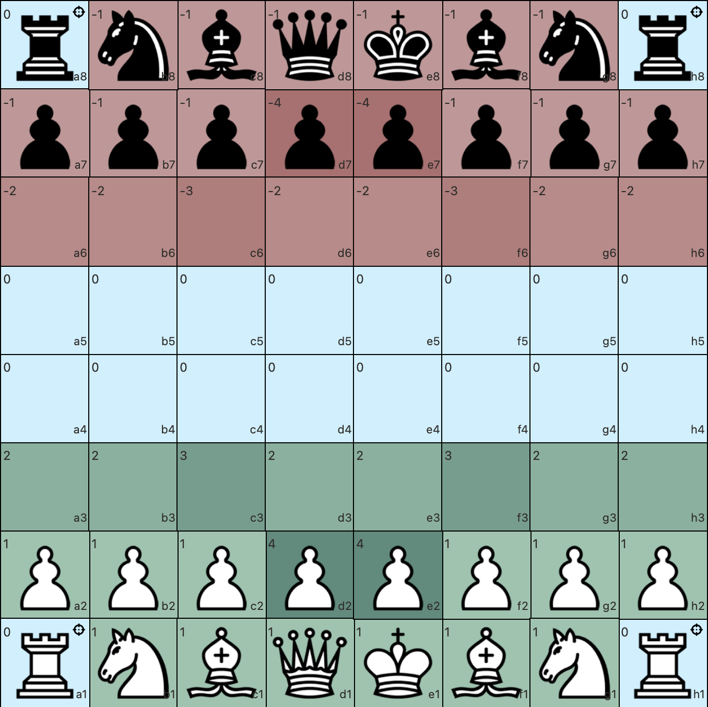
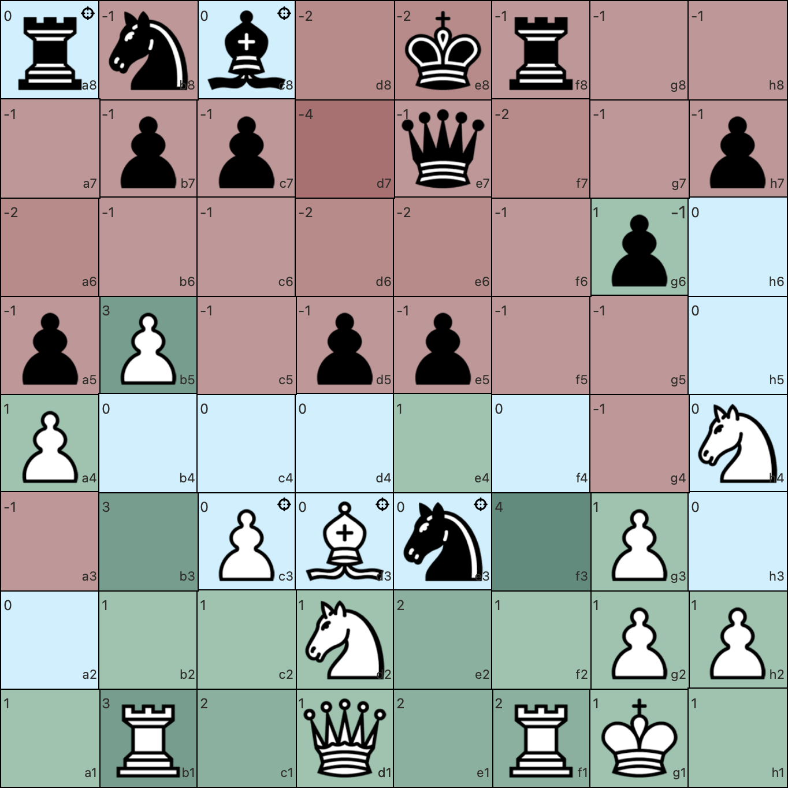
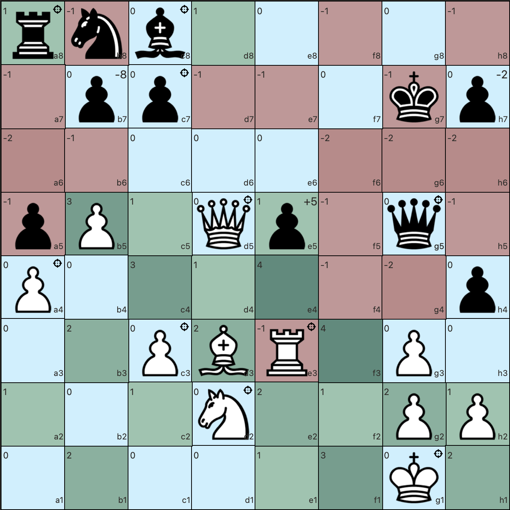
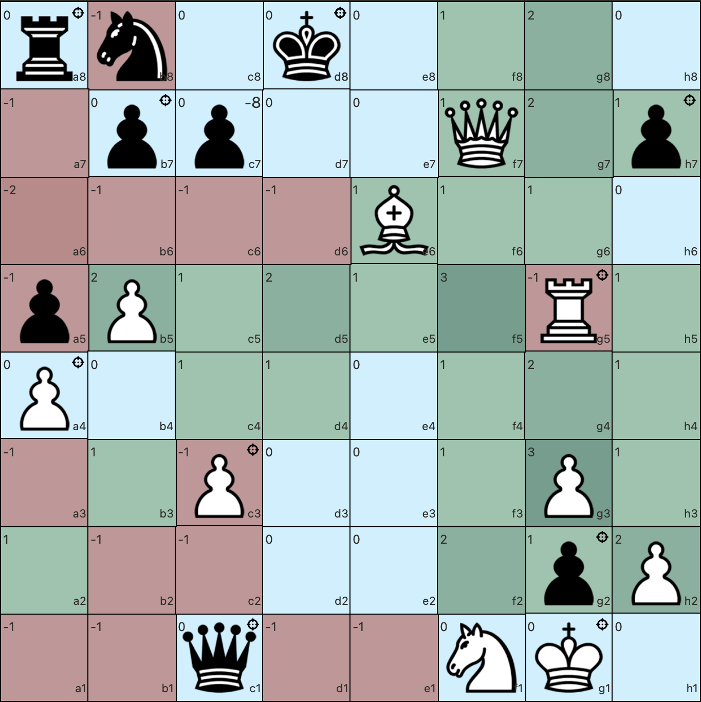

Blunder Watching
Blunder Watching is a Chrome extension designed to aid chess players in evaluating their positions on the board. This extension automatically calculates attackers and defenders for each piece, identifies hanging pieces, and assesses whether you can gain material in exchanges.
Features
-
♟ Attackers and Defenders Calculation:
- The extension visually displays the number of attackers and defenders for each piece on the board.
- Positive numbers indicate defenders, while negative numbers indicate attackers.
-
♞ Hanging Pieces Identification:
- Pieces that are undefended (hanging) are indicated by a target icon, allowing you to quickly spot vulnerabilities in your position.
-
♝ Material Gain Analysis:
- Blunder Watching evaluates potential exchanges and determines if you can win material.
-
♜ Interface:
- The extension overlays information directly onto the board for easy reference.
- Colors and symbols are used to represent different states and values for quick visual recognition.
-
♛ Real-Time Updates:
- The extension updates in real-time as you make moves, ensuring that you always have the latest information at your fingertips.



